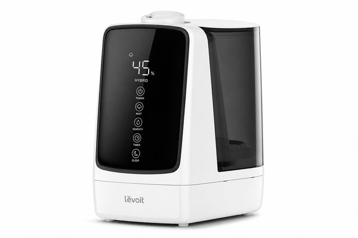
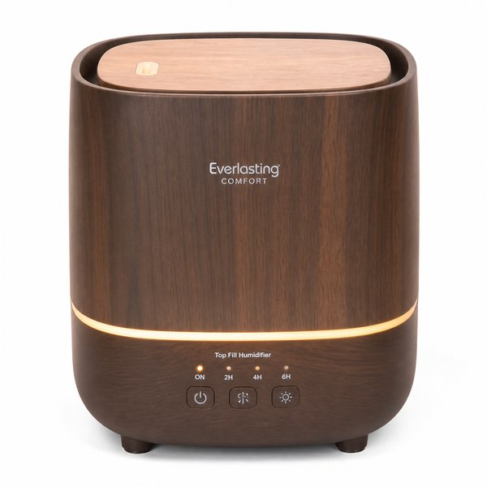
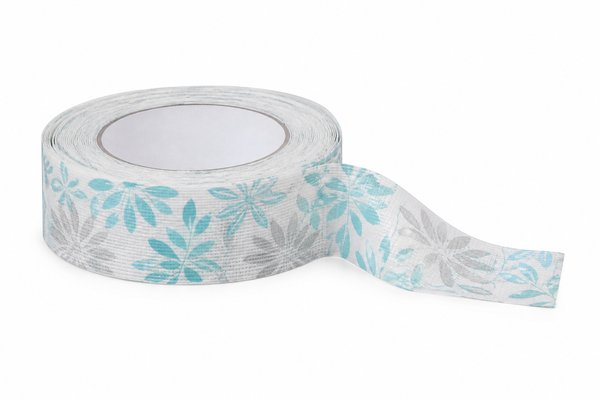
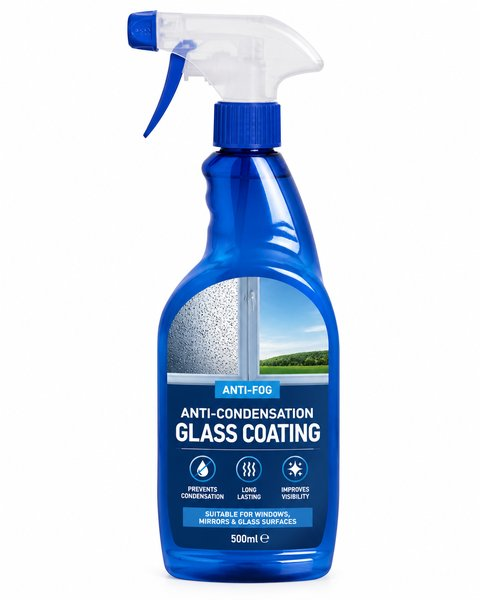
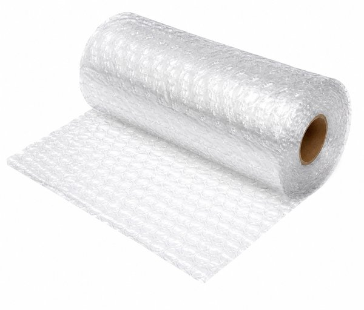
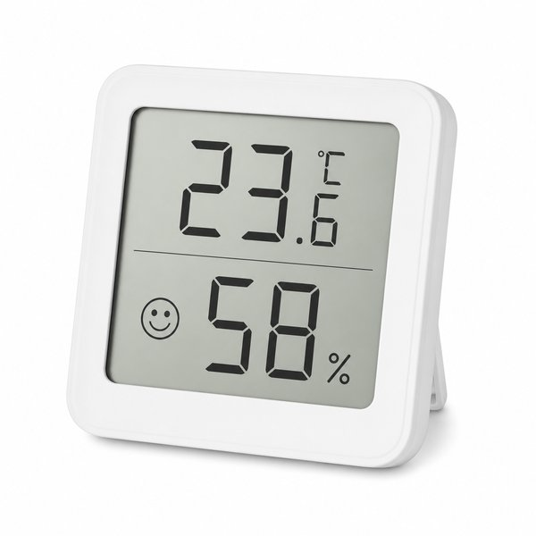
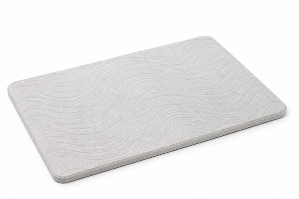
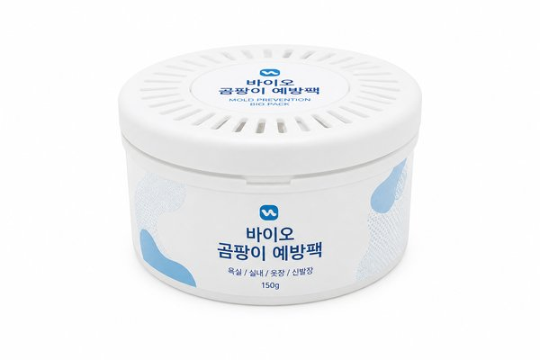

【2026年最新】冬の乾燥・結露対策に！おすすめ加湿器＆結露防止グッズ10選
冬になると一気に進むお部屋の乾燥。朝起きると喉がイガイガしたり、お肌の乾燥や静電気に悩まされる季節ですよね。
一方で、加湿器をフル稼働させると今度は「窓ガラスのびっしょり結露やサッシのカビ」という新たなストレスが発生してしまいます。
本記事では、快適な湿度を保ちながら結露・カビの発生をスマートに抑える、冬の乾燥＆結露対策に欠かせない神アイテム10選を写真付きでご紹介します。
- おすすめ10選 スペック・特徴比較表
- BEST 1｜スチーム式加湿器 EE-DD50 4.0L
- BEST 2｜ハイブリッド式加湿器 HD-LX1223
- BEST 3｜加湿空気清浄機 プラズマクラスター7000 KC-R50
- BEST 4｜上部給水ハイブリッド式加湿器 L's Humidifier+
- BEST 5｜強力結露吸水テープ ワイド 巾60mm×長さ2m
- BEST 6｜結露防止スプレー 400ml ガラスコーティング
- BEST 7｜窓ガラス断熱シート クリア 水貼り 2巻入
- BEST 8｜デジタル温湿度計 O-271 大画面表示
- BEST 9｜多目的 珪藻土吸水マット＆バーボード
- BEST 10｜パワーバイオ お風呂のカビきれい（防カビ剤）
- 【読者限定】無料体験キャンペーン
- まとめ：生活をラクにする最初の一歩
| 順位 | 商品名 | ブランド | 最大の特徴・おすすめ理由 | 総合評価 |
|---|---|---|---|---|
| BEST 1 | スチーム式加湿器 EE-DD50 4.0L | 象印マホービン（ZOJIRUSHI） | フィルター掃除が一切不要でカビやヌメリの心配がゼロ | 4.9 ★ |
| BEST 2 | ハイブリッド式加湿器 HD-LX1223 | Dainichi（ダイニチ） | 就寝時でも全く気にならない圧倒的な静音運転（最小13dB） | 4.8 ★ |
| BEST 3 | 加湿空気清浄機 プラズマクラスター7000 KC-R50 | SHARP（シャープ） | 加湿と空気清浄を1台に集約でき部屋のスペースを圧迫しない | 4.8 ★ |
| BEST 4 | 上部給水ハイブリッド式加湿器 L's Humidifier+ | エルズヒュミディファイアー | 重い水タンクを蛇口まで運ぶ必要がない楽ちん上部給水 | 4.7 ★ |
| BEST 5 | 強力結露吸水テープ ワイド 巾60mm×長さ2m | ニトムズ（Nitoms） | 幅60mmのワイド設計で朝の大量の結露水もしっかりキャッチ | 4.8 ★ |
| BEST 6 | 結露防止スプレー 400ml ガラスコーティング | アサヒペン（Asahipen） | スプレーしてサッと拭くだけの手軽さで施工時間がわずか数分 | 4.6 ★ |
| BEST 7 | 窓ガラス断熱シート クリア 水貼り 2巻入 | ニトムズ（Nitoms） | 水吹きスプレーだけで貼れて糊を使わないため跡残りゼロ | 4.7 ★ |
| BEST 8 | デジタル温湿度計 O-271 大画面表示 | dretec（ドリテック） | 文字が大きく見やすいので部屋のどこからでも湿度が把握できる | 4.8 ★ |
| BEST 9 | 多目的 珪藻土吸水マット＆バーボード | 珪藻土製品シリーズ | 水滴が落ちても数秒で吸収され足元や窓際が濡れない | 4.7 ★ |
| BEST 10 | パワーバイオ お風呂のカビきれい（防カビ剤） | コジット（COGIT） | 天井にペタッと貼るだけで約6ヶ月間カビ予防効果が持続 | 4.8 ★ |
スチーム式加湿器 EE-DD50 4.0L

ポットと同じ構造でフィルターがなく、クエン酸を入れて煮沸するだけで掃除が完了する手入れ最強のスチーム式加湿器。沸騰させた清潔な蒸気で部屋全体をパワフルに潤し、室温もほんのり温まります。
- フィルター掃除が一切不要でカビやヌメリの心配がゼロ
- 沸騰させた蒸気なので雑菌が繁殖せず衛生的
- 4.0Lの大容量タンクで就寝中も給水なしで朝まで安心
- 沸騰させるため電気代が気化式や超音波式よりやや高め
ハイブリッド式加湿器 HD-LX1223

業界トップクラスの静音性とパワフルな加湿量を両立したハイブリッド式加湿器。使い捨てトレイカバーを採用しており、面倒なトレイのぬめり掃除から解放されます。スマート加湿で電気代も賢くセーブ。
- 就寝時でも全く気にならない圧倒的な静音運転（最小13dB）
- カンタン取替えトレイカバーで水アカ掃除の手間を劇的に削減
- 湿度に応じて気化式と温風気化式を自動で切り替え省エネ
- 定期的なフィルター交換のランニングコストがかかる
加湿空気清浄機 プラズマクラスター7000 KC-R50

冬のウイルス対策・花粉対策と加湿を1台で同時にこなす王道モデル。プラズマクラスター技術で浮遊菌を抑え、遠くのホコリも素早く吸じん。寝室やリビングの通年家電としてコスパ抜群です。
- 加湿と空気清浄を1台に集約でき部屋のスペースを圧迫しない
- スピード循環気流で静電気を抑え花粉や微小粒子を強力キャッチ
- 1万円台後半〜2万円台前半と高機能ながらコスパが非常に高い
- 加湿フィルターの定期的なクエン酸浸け置き洗いが必要
上部給水ハイブリッド式加湿器 L's Humidifier+

フタを開けて上からやかん等で直接水を注げる上部給水設計が便利な人気加湿器。ウッド調の脚部とシンプルな円筒フォルムがインテリアに調和し、アロマオイルにも対応しています。
- 重い水タンクを蛇口まで運ぶ必要がない楽ちん上部給水
- 北欧風のインテリアに馴染む洗練された木目調デザイン
- 微細なミストを噴霧しつつ加熱ヒーターで衛生面を強化
- 大部屋（15畳以上）を1台で賄うには加湿量がやや物足りない
強力結露吸水テープ ワイド 巾60mm×長さ2m

窓ガラスの下部に貼るだけで、垂れてくる結露水をグングン吸収し自然蒸発させる特殊不織布テープ。サッシの木枠や床の腐食、壁紙のカビ発生を物理的にシャットアウトします。
- 幅60mmのワイド設計で朝の大量の結露水もしっかりキャッチ
- 剥がす時に糊残りしにくく賃貸住宅でも安心して使える
- 可愛いパターン柄入りで窓辺の見た目もおしゃれにキープ
- 結露が極端に多い部屋では限界を超えて溢れる場合がある
結露防止スプレー 400ml ガラスコーティング

窓ガラスにスプレーして拭き伸ばすだけで、特殊ポリマーが表面に親水被膜を形成。水滴が大きな粒になるのを防いで薄い水膜化させ、結露だれとカビの発生を最大約1ヶ月間抑制します。
- スプレーしてサッと拭くだけの手軽さで施工時間がわずか数分
- 透明な被膜なので窓の外の視界や採光を一切遮らない
- 1本で約30〜40枚分の窓ガラスに使用可能でコスパ優秀
- 効果を持続させるには月1回程度の再スプレーが必要
窓ガラス断熱シート クリア 水貼り 2巻入

水だけで窓ガラスに密着する特殊空気層フィルム。外の冷気を遮断し室内の暖気を逃がさないため、暖房効率が大幅に向上すると同時に、窓の表面温度低下を防いで結露を根本から劇的に減らします。
- 水吹きスプレーだけで貼れて糊を使わないため跡残りゼロ
- 窓からのヒヤッとした冷気（コールドドラフト）を大幅低減
- 透明度が高く昼間の明るさを損なわないクリアタイプ
- 凸凹ガラスやすりガラスには水貼りできない（粘着タイプが必要）
デジタル温湿度計 O-271 大画面表示

遠くからでも一目で温度と湿度が確認できる特大液晶ディスプレイを採用したデジタル温湿度計。「快適」「インフルエンザ警戒」「熱中症警戒」などのアイコン表示で、加湿や換気のタイミングが直感的に分かります。
- 文字が大きく見やすいので部屋のどこからでも湿度が把握できる
- スタンド・壁掛け・マグネットの3WAY設置で置き場所を選ばない
- 最高・最低温湿度の記録機能で就寝中の環境変化もチェック可能
- 暗所用のバックライト機能は非搭載
多目的 珪藻土吸水マット＆バーボード

天然珪藻土の優れた調湿・速乾性を活かした吸水ボード。窓際や加湿器の足元、洗面台の横に置くだけで、飛び散った水滴や結露の水分を驚異的なスピードで吸収してサラサラに保ちます。
- 水滴が落ちても数秒で吸収され足元や窓際が濡れない
- カビやダニが繁殖しにくい無機質素材でいつでも衛生的
- 汚れたら付属の紙やすりで削るだけで吸水力が半永久的に復活
- 硬質プレートタイプのため落としたり強い衝撃を与えると割れる
パワーバイオ お風呂のカビきれい（防カビ剤）

天井に貼るだけで、微生物（バチルス菌）が活動してカビと悪臭の原因菌を分解・抑制する大ロングセラー防カビ剤。結露でカビやすい浴室やクローゼット、脱衣所を化学薬品を使わずに清潔に保ちます。
- 天井にペタッと貼るだけで約6ヶ月間カビ予防効果が持続
- 塩素などの有害薬品を使わないので小さな子どもがいても安心
- 面倒なお風呂の黒カビ擦り洗いの頻度が激減する
- すでに生えている黒カビを漂白する効果はないため事前掃除が必要
日々の暮らしや買い物を楽しむなら、人気雑誌1,000誌以上がスマホやタブレットで読み放題の「楽天マガジン」が圧倒的におすすめです！初回31日間は完全無料で、無料期間中に解約すれば料金は1円もかかりません。
＼ 読者負担0円！雑誌1,000誌読み放題 ／楽天マガジン 31日間無料お試しを詳しく見る →
💡 まとめ：生活をラクにする最初の一歩
冬の乾燥や結露は、体調管理や住宅の寿命にも直結する重要なポイントです。まずは手入れが圧倒的に楽な「象印スチーム加湿器」や、貼るだけでサッシの水滴を防ぐ「結露吸水テープ」から取り入れて、心地よい冬の暮らしを手に入れてみてください。
楽天市場では「5と0のつく日」や「お買い物マラソン」などのキャンペーンに合わせて購入すると、ポイント還元が最大化してお得に手に入ります。ぜひチェックしてみてくださいね。